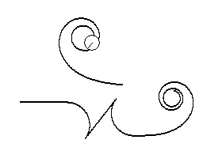
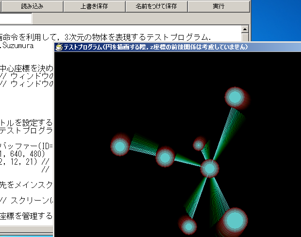
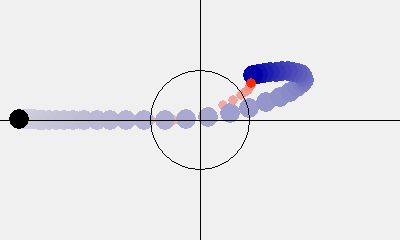

A simple programming language. download
This is an interpreter programming language coded from C++ and Microsoft Macro Assembler (MASM).
This provides "if, for, while" and self-defining function.
You can move a virtual robot by typing some simple commands or using USB controller.

A simple programming language2. download
This is an interpreter programming language using HSP(hot soup processor is a programming language created by japanese programmer Onitama).
This is the complete version of ExScript which was posted to HSP programming contest
here.
You can use self-defining function, arrays(variables) of strings/integer/real-value, and WindowsAPI furthermore.

Kalman filter simulation. download
In this simulation, the black point chases your mouse cursor.
